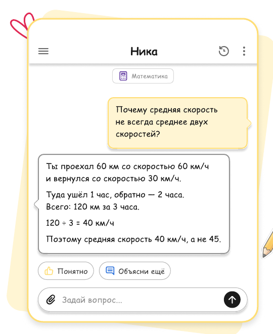
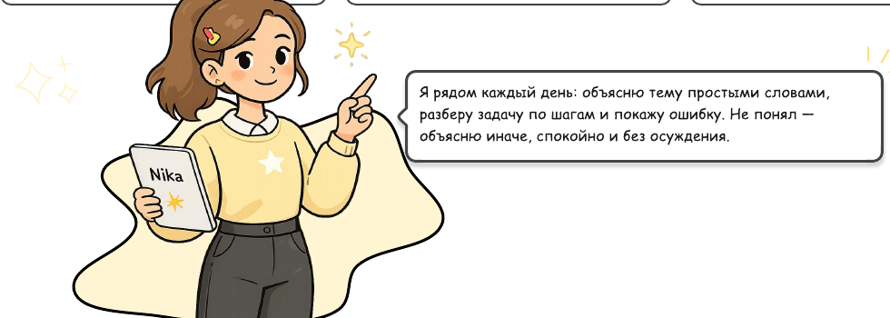
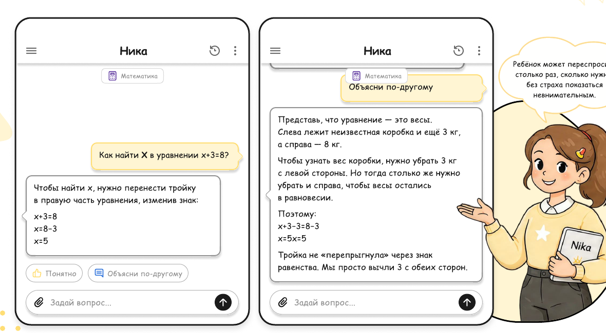
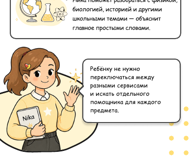
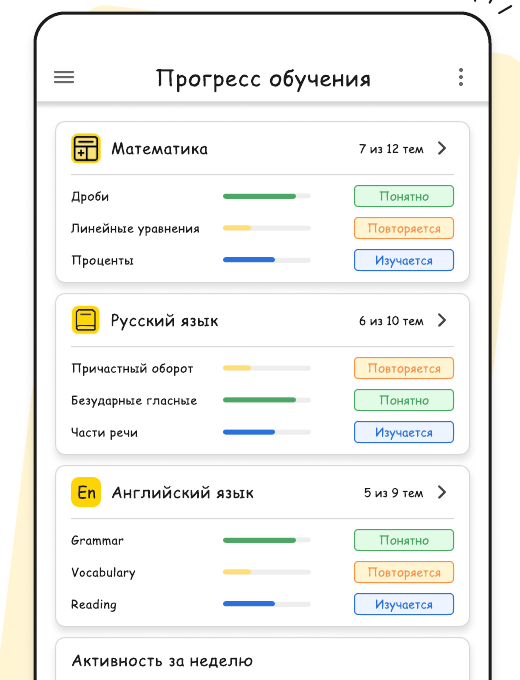
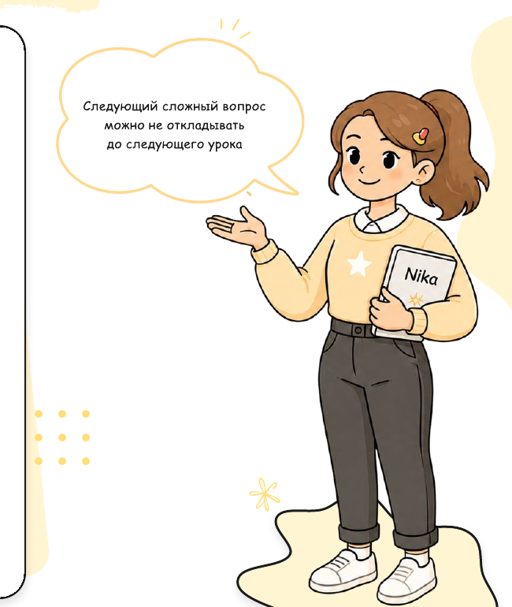

Домашнее задание занимает весь вечер
Ребёнок долго сидит над одной задачей, нервничает и постоянно просит помощи.
Персональный ИИ-репетитор, который помогает разобраться в школьной программе, объясняет задания по фото и отвечает на вопросы столько раз, сколько потребуется.

Ребёнок долго сидит над одной задачей, нервничает и постоянно просит помощи.
Новую тему объяснили слишком быстро, а ребёнок постеснялся переспросить.
Но школьная программа давно забылась, а ваши объяснения ребёнку не подходят.
Решение можно переписать, но решить похожую задачу ребёнок всё ещё не может.
Без понимания базовых тем каждая следующая глава становится сложнее.
А урок с репетитором или консультация учителя будут только через несколько дней.

Ребёнок пишет вопрос своими словами или выбирает предмет и тему.
Ника распознает условие задачи и поможет разобраться, с чего начать решение.
Ника разбирает тему последовательно, приводит примеры и объясняет логику решения.
Можно попросить более простое объяснение, другой пример или подробный разбор.

Не нужно формулировать запрос как в учебнике. Ребёнок может просто написать, что именно ему непонятно.
Можно сфотографировать домашнюю работу и получить помощь с условием, правилами и ходом решения.
Ника помогает пройти путь от условия задачи до ответа, объясняя каждый этап.
Если ребёнок не понял, Ника упрощает формулировку, приводит аналогию или показывает другой пример.
Если проблема связана с предыдущей темой, Ника поможет вернуться к базе и повторить необходимый материал.
Родитель видит, какие темы ребёнок изучал и где ему потребовалась дополнительная помощь.
Задачи, дроби, уравнения, проценты, геометрия и другие темы школьной программы.
Правила, разбор предложений, части речи, орфография и работа над ошибками.
Грамматика, школьные упражнения, перевод, лексика и объяснение правил на понятных примерах.
Физика, биология, история и другие школьные темы — главное простыми словами.

| Критерий | Ника ♡ | Поиск в интернете | Универсальный ИИ | Репетитор |
|---|---|---|---|---|
| Доступность в момент возникновения вопроса | Да | Да | Да | По расписанию |
| Можно отправить фото задания | Да | Ограниченно | Зависит от сервиса | Да |
| Можно попросить объяснить другим способом | Да | Нужно искать новый материал | Да | Да |
| Специализированный сценарий обучения | Да | Нет | Нет | Да |
| Помощь по нескольким предметам | Да | Да | Да | Обычно ограниченно |
| Прогресс для родителя | Да | Нет | Нет | Зависит от специалиста |
Ника не заменяет учителя или репетитора. Она помогает ребёнку в тот момент, когда возник вопрос и нужно ещё раз разобраться в теме.
Не нужно каждый вечер проверять все задания и заново проходить школьную программу вместе с ребёнком.
Ребёнок сначала пробует разобраться с помощью Ники.
В прогрессе видно, где ребёнку потребовалось повторное объяснение.
Если сложности повторяются, родитель понимает, на какую тему стоит обратить внимание.


Условия и стоимость появятся перед подключением. Оставить заявку можно без банковской карты.
Мы свяжемся с вами по указанному контакту, расскажем о доступе и поможем начать.
Нет, для отправки заявки банковская карта не нужна.
Ника создана для последовательного разбора школьных тем. Важные ответы всегда можно перепроверить с учителем.
Нет. Главная задача Ники — помочь ребёнку понять ход решения и научиться справляться самостоятельно.
Родитель увидит изученные темы, заданные вопросы и темы, к которым стоит вернуться.
Да. Ника помогает между занятиями, когда вопрос возник прямо сейчас.